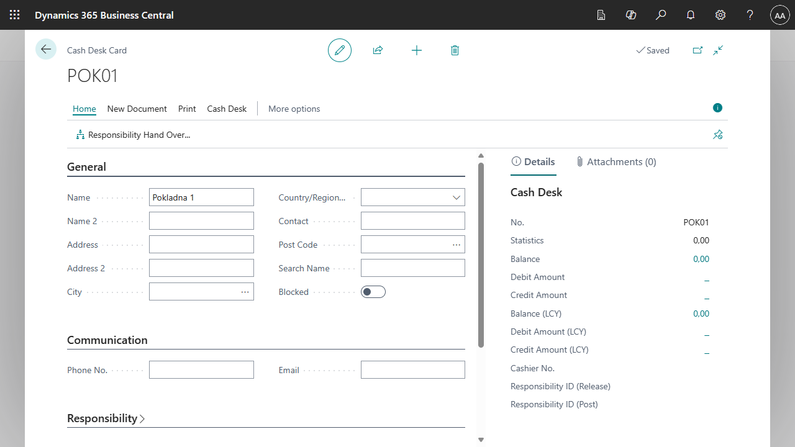
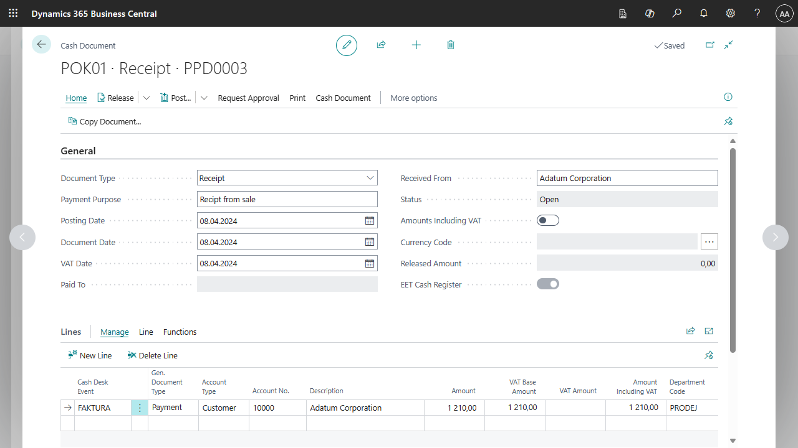
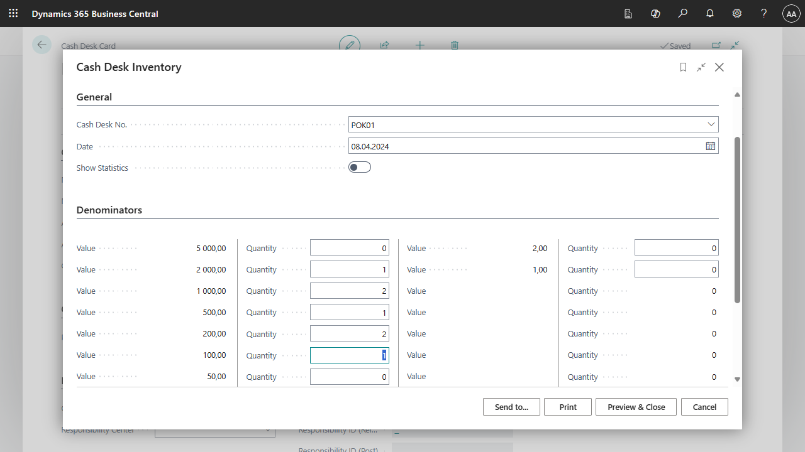

Cash Desk localization for Czech (extension)
In the Czech version of Business Central, the Cash Desk functionality helps companies with the legislation requirements and best practices in Cash Desk operations.
The Cash Desks and Cash Documents features allow you to define cash accounts and Cash Desks for the physical receipt and money withdrawal. Each Cash Desk must have a separate number series of the cash documents. You can set up separate number series for the receipt cash documents and withdrawal cash documents. The Cash Desk cases are predefined cases to simplify data entry. You can specify individual user authorized to operate with the particular Cash Desk and transmit Cash Desks between users.
Key Features
- Cash Desk setup, Cash Desk users
- Receipt cash document, withdrawal of cash documents and their posting
- Cash Desk cases used as templates for usual accounting transactions
- Payment application with customer and vendor ledger entries
- Payment Application with advance invoices
- Cash Desk inventory
- Output documents (receipt cash document, withdrawal cash document)
- Reports - Cash Desk Account Book, Cash Desk Book, Cash Desk Hand Over
The Cash Desk card contains basic information about the Cash Desk, such as number, currency, contact details, etc. It also contains settings for posting, definitions for controls and limits, and preset No. series for Cash Desk documents.

Cash Desk documents are either receipts or withdrawals and can be in different currencies depending on the Cash Desk. The documents also allow issuing, posting and printing of output documents.

Cash Desk user setup
- Choose the
 , enter Cash Desk Setup and then choose the related link.
, enter Cash Desk Setup and then choose the related link. - On the Cash Desk Setup page under the Navigation tab, use the Cash Desk Users feature.
- The Cash Desk Users tab opens. To create a new user, use the New function.
- In the row, select the Cash Desk No. that the user will be working on. Next, select the User ID and select whether the user will have the option to Issue, Post or Post EET only.
- After setup, close the page.
Setting up No. series for receipts and withdrawals
- Choose the , enter Cash Desk Setup and then choose the related link.
- Open the card of the selected Cash Desk.
- On the Cash Desk Setup Card, you can find the No. series tab.
- In the Cash Receipt Order No. and Withdrawal Receipt No. fields, select the No. series you want to use.
- After setting up, close the Cash Desk settings card.
Setting up Cash Desk Events
- Choose the , enter Cash Desk Events Setup and then choose the related link.
- Use the New function to create an event on the Cash Desk list.
- Fill in the following fields as required:
- Code, description
- Type of Cash Desk document (receipt or withdrawal)
- Account Type, Account No., Gen. Posting Type, Posting Group
- Global Dimension Code 1 and Global Dimension Code 2 and, if applicable, whether it is an EET transaction
- After setting up, close the list.
Cash Desk Inventory
For the purpose of Cash Desk inventory in Business Central, you can find a report for generating the balance in the Cash Desk.
Nominal Value Setup
First, you need to define which banknotes and coins you use in different currencies. It is necessary to define their nominal value for each currency.
- Choose the , enter Currency Nominal Values and then choose the related link.
- Create rows in the table using the combination of Currency Code and Value. Do not select a currency code to set the local currency of the system.
- After defining the rows, you can close the page.
Cash Desk Inventory Report
- Choose the , enter Cash Desk Inventory and then choose the related link.
- On the page before running the report, select input parameters such as:
- Cash Desk Code for which the inventory is being taken.
- Date when the inventory is carried out.
- Option Show Statistics of the cash register in the report.
- Next on the page, fill in the table Nominal values, i.e. the number of individual banknotes and coins.
- After setting the filters, use the Preview and Close button. You will then see a page where you can see the status of the selected Cash Desk.

Payment application with customer and vendor ledger entries
The Apply Entries function can be run from the cash document lines to select customer or vendor entries to be reconciled. Similarly, functions are available for balancing with advance invoices.
- Choose the , enter Cash Document adn then choose the related link.
- In the Cash Document list, create a cash document using the New button.
- Fill in the fields on the cash receipt card:
- Document type: Receipt or Withdrawal
- Payment Purpose: list the text that specifies the purpose of the payment
- Posting date, Document date and VAT
- Possibly other fields as required
- In the lines select:
- Account Type: Customer or Vendor
- Account number: Select Customer or Vendor number
- In the functions above the line, use the Apply Entries function to find the entry you want to apply.
- After selecting the entry, you can post the document.